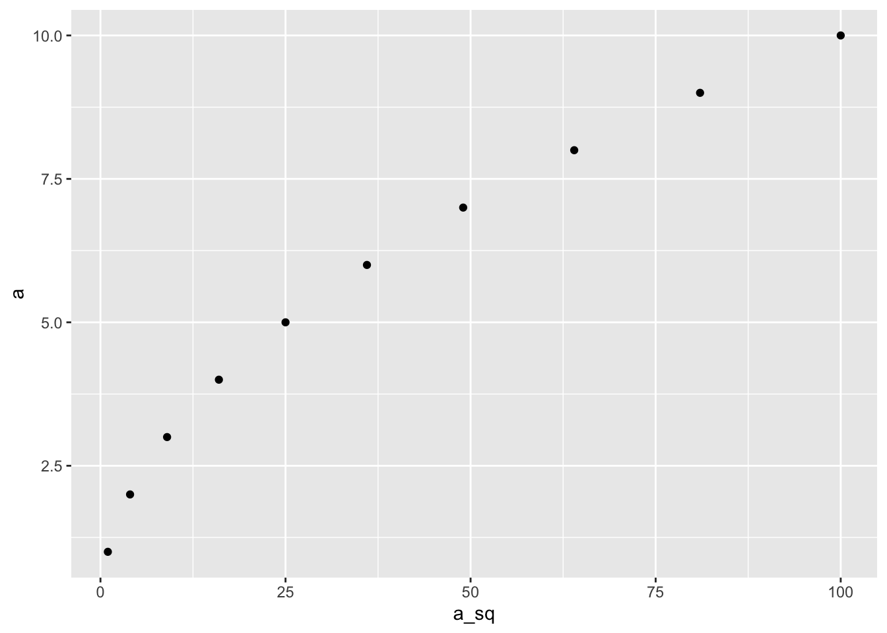
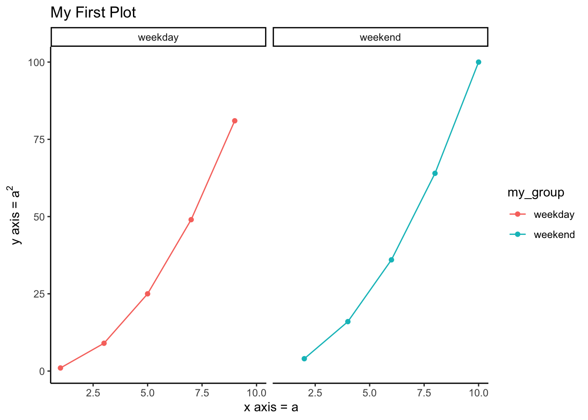

Chapter 6 Descriptive Statistics
Anytime you have some data, one of the first tasks you need to do is to find ways to summarize your data neatly. Raw data by itself will not make much sense. So, you want to calculate some summary statistics that describes your data. This is descriptive statistics (as opposed to inferential statistics).
Let us start with a simple dataset about the mammalian sleep hours.
library(tidyverse)## ── Attaching packages ─────────────────────────────────────── tidyverse 1.3.2 ──
## ✔ ggplot2 3.3.6 ✔ purrr 0.3.4
## ✔ tibble 3.1.8 ✔ dplyr 1.0.10
## ✔ tidyr 1.2.1 ✔ stringr 1.4.1
## ✔ readr 2.1.2 ✔ forcats 0.5.2
## ── Conflicts ────────────────────────────────────────── tidyverse_conflicts() ──
## ✖ dplyr::filter() masks stats::filter()
## ✖ dplyr::lag() masks stats::lag()library(magrittr)##
## Attaching package: 'magrittr'
##
## The following object is masked from 'package:purrr':
##
## set_names
##
## The following object is masked from 'package:tidyr':
##
## extractlibrary(lsr)
mammalian_sleep <-
read_csv("./data/msleep_ggplot2.csv") %>%
select(name, sleep_total, bodywt) %>%
rename(sleep_total_h = sleep_total, bodywt_kg = bodywt) %>%
mutate(sleep_total_h = round(sleep_total_h) )## Rows: 83 Columns: 11
## ── Column specification ────────────────────────────────────────────────────────
## Delimiter: ","
## chr (5): name, genus, vore, order, conservation
## dbl (6): sleep_total, sleep_rem, sleep_cycle, awake, brainwt, bodywt
##
## ℹ Use `spec()` to retrieve the full column specification for this data.
## ℹ Specify the column types or set `show_col_types = FALSE` to quiet this message.head(mammalian_sleep)## # A tibble: 6 × 3
## name sleep_total_h bodywt_kg
## <chr> <dbl> <dbl>
## 1 Cheetah 12 50
## 2 Owl monkey 17 0.48
## 3 Mountain beaver 14 1.35
## 4 Greater short-tailed shrew 15 0.019
## 5 Cow 4 600
## 6 Three-toed sloth 14 3.85There are three variables here,
name,sleep_total_handbodywt_kg. For each animal named inname, thesleep_total_hvariable contains the average number of hours animals of this kind sleep per day. The variablebodywt_kgcontains the average weight of that animal in kg.Let’s have a look at the
sleep_total_hvariable:
print(mammalian_sleep$sleep_total_h)## [1] 12 17 14 15 4 14 9 7 10 3 5 9 10 12 10 8 9 17 5 18 4 20 3 3 10
## [26] 11 15 12 10 2 3 6 6 8 10 3 19 10 14 14 13 12 20 15 11 8 14 8 4 10
## [51] 16 10 14 9 10 11 12 14 4 6 11 18 5 13 9 10 8 11 11 17 14 16 13 9 9
## [76] 16 4 16 9 5 6 12 10- This output doesn’t make it easy to get a sense of what the data are actually saying. Just “looking at the data” isn’t a terribly effective way of understanding data. In order to get some idea about what’s going on, we need to calculate some descriptive statistics and draw some nice pictures.
ggplot(mammalian_sleep, aes(sleep_total_h)) +
geom_histogram(binwidth=1,
color = 'black',
fill = 'lightblue')
Figure 6.1: A histogram of the average amount of sleep by animal (the sleep_total_h variable). As you might expect, the larger the margin the less frequently you tend to see it.
6.1 Distributions
Let us see a couple more data examples to get a sense of what data might look like in the wild. First, let us generate some random data with a uniform distribution using the runif() function.
uniform <- as_tibble_col(runif(120, min = 1, max = 6),column_name = "some_value")
uniform## # A tibble: 120 × 1
## some_value
## <dbl>
## 1 2.05
## 2 2.79
## 3 3.75
## 4 3.38
## 5 1.92
## 6 5.02
## 7 5.98
## 8 4.35
## 9 2.27
## 10 1.04
## # … with 110 more rowsLet us plot the uniformly distributed data using a histogram.
ggplot(uniform, aes(some_value)) +
geom_histogram(binwidth=0.5,boundary=0,
color = 'black',
fill = 'lightblue')
Figure 6.2: Histogram of a uniform distribution.
This looks good but it doesn’t make as much intuitive sense as we’d like. Let us tweak this slightly. Assume that you have a fair dice with 6 sides. So, whenever we roll the dice, each side has an equal probability (i.e. 1/6). Let us simulate this. The data is going to be very similar, except that this time we will need discrete values rather than continuous values. For that, we need to use the rdunif() function which generates random values with a discrete uniform distribution.
uniform <- as_tibble_col(rdunif(120, 6, 1), column_name="dice_value")
uniform## # A tibble: 120 × 1
## dice_value
## <dbl>
## 1 4
## 2 2
## 3 4
## 4 1
## 5 6
## 6 3
## 7 1
## 8 3
## 9 6
## 10 2
## # … with 110 more rowsggplot(uniform, aes(dice_value)) +
geom_bar(color = 'black',
fill = 'lightblue')
Just a quick point to think about. Why did we use a histogram for the
continuous uniform distribution and a bar graph for a discrete one?
Also, why didn't we use the **stat="identity"** argument in the bar graph?Now, let us generate some random data with a normal distribution using the rnorm()` function.
normal <- as_tibble(rnorm(160))Let us plot the normally distributed data using a histogram.
ggplot(normal, aes(value)) +
geom_histogram(binwidth=0.2,
color = 'black',
fill = 'lightblue')Figure 6.3: Histogram of a normal distribution.
Here’s another one where we provide the mean and standard deviation parameteres.
normal2 <- as_tibble(rnorm(160, mean = 8, sd= 0.5))Let us plot the seconf normally distributed data using a histogram.
ggplot(normal2, aes(value)) +
geom_histogram(binwidth=0.2,
color = 'black',
fill = 'steelblue')
Figure 6.4: Histogram of a normal distribution.
Finally, let us plot both of the normally distributed data on the same plot to see them side by side.
ggplot(normal, aes(value)) +
geom_histogram(binwidth=0.2,
color = 'black',
fill = 'lightblue') +
geom_histogram(data=normal2, binwidth=0.2,boundary=0,
color = 'black',
fill = 'steelblue')
Figure 6.5: Histogram of two normal distributions side by side.
Figure 6.6: Distributions with different means and standard deviations.
Figure 6.7: Distributions with different means and standard deviations. The light gray area covers the 68% of the data and the total of the gray areas cover the 95% of the data.
6.2 Measures of central tendency
Drawing pictures of the data, as I did in Figure 6.1 is an excellent way to convey the “gist” of what the data is trying to tell you, it’s often extremely useful to try to condense the data into a few simple “summary” statistics. In most situations, the first thing that you’ll want to calculate is a measure of central tendency. That is, you’d like to know something about the “average” or “middle” of your data lies. The three most commonly used measures are the mean, median and mode; occasionally people will also report a trimmed mean. I’ll explain each of these in turn, and then discuss when each of them is useful.
6.2.1 The mean
The mean of a set of observations is just a normal, old-fashioned average: add all of the values up, and then divide by the total number of values. The first five animals’ typical amount of sleep is 12 + 17 + 14 + 15 + 4, so the mean of these observations is just: \[ \frac{12 + 17 + 14 + 15 + 4}{5} = \frac{62.4}{5} = 12.48 \]
Of course, this definition of the mean isn’t news to anyone: averages (i.e., means) are used so often in everyday life that this is pretty familiar stuff. However, since the concept of a mean is something that everyone already understands, I’ll use this as an excuse to start introducing some of the mathematical notation that statisticians use to describe this calculation, and talk about how the calculations would be done in R.
The first piece of notation to introduce is \(N\), which we’ll use to refer to the number of observations that we’re averaging (in this case \(N = 5\)).
Next, we need to attach a label to the observations themselves. It’s traditional to use \(X\) for this, and to use subscripts to indicate which observation we’re actually talking about.
That is, we’ll use \(X_1\) to refer to the first observation, \(X_2\) to refer to the second observation, and so on, all the way up to \(X_N\) for the last one. Or, to say the same thing in a slightly more abstract way, we use \(X_i\) to refer to the \(i\)-th observation. Just to make sure we’re clear on the notation, the following table lists the 5 observations in the
sleep_total_hvariable, along with the mathematical symbol used to refer to it, and the actual value that the observation corresponds to:
| the observation | its symbol | the observed value |
|---|---|---|
| Cheetah (animal 1) | \(X_1\) | 12 hours |
| Owl monkey (animal 2) | \(X_2\) | 17 hours |
| Mountain beaver (animal 3) | \(X_3\) | 14 hours |
| Greater short-tailed shrew (animal 4) | \(X_4\) | 15 hours |
| Cow (animal 5) | \(X_5\) | 4 hours |
Okay, now let’s try to write a formula for the mean. By tradition, we use \(\bar{X}\) as the notation for the mean. So the calculation for the mean could be expressed using the following formula: \[ \bar{X} = \frac{X_1 + X_2 + ... + X_{N-1} + X_N}{N} \]
This formula is entirely correct, but it’s terribly long, so we make use of the summation symbol \(\scriptstyle\sum\) to shorten it.1 If I want to add up the first five observations, I could write out the sum the long way, \(X_1 + X_2 + X_3 + X_4 +X_5\) or I could use the summation symbol to shorten it to this: \[ \sum_{i=1}^5 X_i \]
Taken literally, this could be read as “the sum, taken over all \(i\) values from 1 to 5, of the value \(X_i\)”. But basically, what it means is “add up the first five observations”. In any case, we can use this notation to write out the formula for the mean, which looks like this: \[ \bar{X} = \frac{1}{N} \sum_{i=1}^N X_i \]
In all honesty, I can’t imagine that all this mathematical notation helps clarify the concept of the mean at all. In fact, it’s really just a fancy way of writing out the same thing I said in words: add all the values up, and then divide by the total number of items. However, that’s not really the reason I went into all that detail.
My goal was to try to make sure that everyone reading this book is clear on the notation that we’ll be using throughout the book: \(\bar{X}\) for the mean, \(\scriptstyle\sum\) for the idea of summation, \(X_i\) for the \(i\)th observation, and \(N\) for the total number of observations.
We’re going to be re-using these symbols a fair bit, so it’s important that you understand them well enough to be able to “read” the equations, and to be able to see that it’s just saying “add up lots of things and then divide by another thing”.
6.2.2 Calculating the mean in R
Okay that’s the maths, how do we get the magic computing box to do the work for us? If you really wanted to, you could do this calculation directly in R. For the first numbers, do this just by typing it in as if R were a calculator…
(12 + 17 + 14 + 15 + 4) / 5## [1] 12.4… in which case R outputs the answer 12.4, just as if it were a calculator.
- However, we learned quicker ways of doing that
sum( mammalian_sleep$sleep_total_h[1:5] )/ 5## [1] 12.4# or:
mean( mammalian_sleep$sleep_total_h[1:5] )## [1] 12.46.2.3 The median
The second measure of central tendency that people use a lot is the median, and it’s even easier to describe than the mean. The median of a set of observations is just the middle value.
As before let’s imagine we were interested only in the first 5 animals: They sleep 12, 17, 14, 15, and 4 hours respectively. To figure out the median, we sort these numbers into ascending order: \[ 4, 12, \color{red}{14}, 15, 17 \]
From inspection, it’s obvious that the median value of these 5 observations is 14, since that’s the middle one in the sorted list (I’ve put it in red to make it even more obvious). Easy stuff.
But what should we do if we were interested in the first 6 animals rather than the first 5? Since the sixth animal sleeps for 14 hours, our sorted list is now: \[ 4, 12, \color{red}{14}, \color{red}{14}, 15, 17 \]
That’s also easy. It’s still 14.
But what we do if we were interested in the first 8 animals? Here is our new sorted list. \[ 4, 7, 9, \color{red}{12}, \color{red}{14}, 14, 15, 17 \]
There are now two middle numbers, 12 and 14. The median is defined as the average of those two numbers, which is of course 13.
To understand why, think of the median as the value that divides the sorted list of numbers into two halves – those on its left, and those on its right.
As before, it’s very tedious to do this by hand when you’ve got lots of numbers. To illustrate this, here’s what happens when you use R to sort all the sleep durations. First, I’ll use the
sort()function to display the 83 numbers in increasing numerical order:
sort( mammalian_sleep$sleep_total_h )## [1] 2 3 3 3 3 3 4 4 4 4 4 5 5 5 5 6 6 6 6 7 8 8 8 8 8
## [26] 9 9 9 9 9 9 9 9 10 10 10 10 10 10 10 10 10 10 10 10 11 11 11 11 11
## [51] 11 12 12 12 12 12 12 13 13 13 14 14 14 14 14 14 14 14 15 15 15 16 16 16 16
## [76] 17 17 17 18 18 19 20 20- Because the vector is 83 elements long, the middle value is at position 42. This means that the median of this vector is 10. In real life, of course, no-one actually calculates the median by sorting the data and then looking for the middle value. In real life, we use the median command:
median( mammalian_sleep$sleep_total_h )## [1] 10which outputs the median value of 10.
6.2.4 Mean or median? What’s the difference?

Figure 6.8: An illustration of the difference between how the mean and the median should be interpreted. The mean is basically the “centre of gravity” of the data set: if you imagine that the histogram of the data is a solid object, then the point on which you could balance it (as if on a see-saw) is the mean. In contrast, the median is the middle observation. Half of the observations are smaller, and half of the observations are larger.
Knowing how to calculate means and medians is only a part of the story. You also need to understand what each one is saying about the data, and what that implies for when you should use each one. This is illustrated in Figure 6.8 the mean is kind of like the “centre of gravity” of the data set, whereas the median is the “middle value” in the data. What this implies, as far as which one you should use, depends a little on what type of data you’ve got and what you’re trying to achieve. As a rough guide:
One consequence is that there’s systematic differences between the mean and the median when the histogram is asymmetric (skewed; see Section ??). This is illustrated in Figure 6.8 notice that the median (right hand side) is located closer to the “body” of the histogram, whereas the mean (left hand side) gets dragged towards the “tail” (where the extreme values are).
To give a concrete example, suppose Bob (income $50,000), Kate (income $60,000) and Jane (income $65,000) are sitting at a table: the average income at the table is $58,333 and the median income is $60,000. Then Bill sits down with them (income $100,000,000). The average income has now jumped to $25,043,750 but the median rises only to $62,500. If you’re interested in looking at the overall income at the table, the mean might be the right answer; but if you’re interested in what counts as a typical income at the table, the median would be a better choice here.

Figure 6.9: Another example of mean and median where mean is moved by the outliers but median is constant.
6.2.5 Trimmed mean
One of the fundamental rules of applied statistics is that the data are messy. Real life is never simple, and so the data sets that you obtain are never as straightforward as the statistical theory says.2 This can have awkward consequences. To illustrate, consider this rather strange looking data set (nevermind what it represents): \[ -100,2,3,4,5,6,7,8,9,10 \]
If you were to observe this in a real life data set, you’d probably suspect that something funny was going on with the \(-100\) value. It’s probably an outlier, a value that doesn’t really belong with the others. You might consider removing it from the data set entirely, and in this particular case I’d probably agree with that course of action.
In real life, however, you don’t always get such cut-and-dried examples. For instance, you might get this instead: \[ -15,2,3,4,5,6,7,8,9,12 \]
The \(-15\) looks a bit suspicious, but not anywhere near as much as that \(-100\) did. In this case, it’s a little trickier. It might be a legitimate observation, it might not.
When faced with a situation where some of the most extreme-valued observations might not be quite trustworthy, the mean is not necessarily a good measure of central tendency. It is highly sensitive to one or two extreme values, and is thus not considered to be a robust measure.
One remedy that we’ve seen is to use the median. A more general solution is to use a “trimmed mean”. To calculate a trimmed mean, what you do is “discard” the most extreme examples on both ends (i.e., the largest and the smallest), and then take the mean of everything else. The goal is to preserve the best characteristics of the mean and the median:
- just like a median, you aren’t highly influenced by extreme outliers, but …
- like the mean, you “use” more than one of the observations.
Generally, we describe a trimmed mean in terms of the percentage of observation on either side that are discarded. So, for instance, a 10% trimmed mean discards the largest 10% of the observations and the smallest 10% of the observations, and then takes the mean of the remaining 80% of the observations.
Not surprisingly, the 0% trimmed mean is just the regular mean, and the 50% trimmed mean is the median. In that sense, trimmed means provide a whole family of central tendency measures that span the range from the mean to the median.
For our toy example above, we have 10 observations, and so a 10% trimmed mean is calculated by ignoring the largest value (i.e.,
12) and the smallest value (i.e.,-15) and taking the mean of the remaining values. First, let’s enter the data
dataset <- c( -15,2,3,4,5,6,7,8,9,12 )Next, let’s calculate means and medians:
mean( dataset )## [1] 4.1median( dataset )## [1] 5.5- That’s a fairly substantial difference, but I’m tempted to think that the mean is being influenced a bit too much by the extreme values at either end of the data set, especially the \(-15\) one. So let’s just try trimming the mean a bit. If I take a 10% trimmed mean, we’ll drop the extreme values on either side, and take the mean of the rest:
mean( dataset, trim = .1)## [1] 5.5- In this case it gives exactly the same answer as the median. Note that, to get a 10% trimmed mean you write
trim = .1, nottrim = 10.
6.2.6 Mode
The mode is the last measure of central tendency we’ll look at. It is very simple: it is the value that occurs most frequently.
Let’s look at the some soccer data: specifically, the European Cup and Champions League results in the time from 1955-2016.
Lets find out which team has won the most matches. The command below tells R we just want the first 25 rows of the data.frame.
library(engsoccerdata)
table(champs$tiewinner) %>% sort(decreasing=T) %>% .[1:25]##
## Real Madrid Bayern Munich SL Benfica AC Milan
## 183 134 110 103
## Barcelona Liverpool Juventus Dinamo Kiev
## 101 97 87 82
## Celtic Manchester United RSC Anderlecht AFC Ajax
## 81 81 75 71
## Internazionale Steaua Bucuresti Crvena Zvezda Rangers
## 66 63 61 58
## Partizan Belgrade PSV Eindhoven Dinamo Zagreb FC Porto
## 52 49 48 46
## Atletico Madrid Panathinaikos BATE Borisov CSKA Sofia
## 45 44 40 40
## Galatasaray
## 40It appears that the mode of the winning team is ‘Real Madrid’.
Of course, the mode is the right (and only) summary for nominal variables.
But we can compute a mode for all types of variables. For example, let’s take a look at the mean, median, and mode of the total number of goals per game.
champs %<>% mutate(total_goals = hgoal + vgoal) # total goals is home team goals + visitor goalsmean(champs$total_goals)## [1] 2.81642median(champs$total_goals)## [1] 3modeOf(champs$total_goals)## [1] 2mean_goals <- mean(champs$total_goals)
median_goals <- median(champs$total_goals)
mode_goals <- modeOf(champs$total_goals)
ggplot(champs, aes(total_goals)) + geom_histogram(fill= 'dimgrey') +
geom_vline(xintercept = mean_goals, color = "indianred") +
geom_vline(xintercept = median_goals, color = "steelblue") +
geom_vline(xintercept = mode_goals, color = "yellowgreen") +
geom_text(data=NULL, x = mean_goals-.6, y=1470, label = "mean", color = "indianred") +
geom_text(data=NULL, x = median_goals+.75, y=1500, label = "median", color = "steelblue") +
geom_text(data=NULL, x = mode_goals-.6, y=1530, label = "mode", color = "yellowgreen")## `stat_bin()` using `bins = 30`. Pick better value with `binwidth`.
6.2.7 Summary
- There are multiple measures of central tendency that can be used to summarize an aspect of a distribution: _ (arithmetic) mean, median, and mode_.
- They answer different questions about distribution. For example, in the distribution of number of goals per game in the previous section
- mean: “If the same number of goals were scored in each game, how many goals would be scored?”
- median: “What is a ‘mediocre’ game like?”
- mode: “What is the most typical game like?”
6.3 Measures of variability
- The statistics that we’ve discussed so far all relate to central tendency. That is, they all talk about which values are “in the middle” or “popular” in the data.
- The second thing that we really want is a measure of the variability of the data.
- That is, how “spread out” are the data?
- In other words, how ‘representative’ is our measure of central tendency of most data points.
- Let’s consider interval and ratio scale data.
6.3.1 Range
- The range of a variable is very simple: it’s the biggest value minus the smallest value. For the sleep data, the maximum value is 20, and the minimum value is 2. We can calculate these values in R using the
max()andmin()functions:
max( mammalian_sleep$sleep_total_h )## [1] 20min( mammalian_sleep$sleep_total_h )## [1] 2where I’ve omitted the output because it’s not interesting.
- The other possibility is to use the
range()function; which outputs both the minimum value and the maximum value in a vector, like this:
range( mammalian_sleep$sleep_total_h )## [1] 2 20- Although the range is the simplest way to quantify the notion of “variability”, it’s one of the worst. Recall from our discussion of the mean that we want our summary measure to be robust. If the data set has one or two extremely bad values in it, we’d like our statistics not to be unduly influenced by these cases. If we look once again at our toy example of a data set containing very extreme outliers… \[ -100,2,3,4,5,6,7,8,9,10 \] … it is clear that the range is not robust, since this has a range of 110, but if the outlier were removed we would have a range of only 8.
6.3.2 Quantiles and percentile
A key concept we will need to build on to conceptualize several other measures of variability are quantiles or percentiles.
A percentile is the smallest value in a dataset such that a set percentage is smaller than it. (A quantile does pretty much the same but is more generic.)
For example, if the 10-th percentile (i.e., the \(0.1\) quantile) of a list of values is 73, this means that 10 percent of the values are smaller than or equal to 73.
Let’s take a look at the 20 shortest sorted sleep durations and determine the 10-th percentile (\(0.1\) quantile), 30-th percentile (\(0.3\) quantile), 50-th percentile (\(0.5\) quantile), and the 90-th percentile (\(0.9\) quantile).
Here are the values:
sort(mammalian_sleep$sleep_total_h)[1:20]## [1] 2 3 3 3 3 3 4 4 4 4 4 5 5 5 5 6 6 6 6 7- And here is a sorted plot of the 20 smallest values:
quantile <- c(0.1,0.3,0.5,0.9)
quantile_points <- c(0.1,0.3,0.5,0.9)*20
quantile_labels <- sprintf("%0.1f quantile\n(point %d of 20)", quantile, quantile_points)
ggplot(data=NULL, aes(x=1:20, y=sort(mammalian_sleep$sleep_total_h)[1:20])) +
geom_point() +
geom_vline(xintercept = quantile_points) +
geom_label(aes(x=quantile_points, y=6.5, label=quantile_labels )) +
scale_x_continuous(breaks = 1:20) + xlab("Position in ordered vector") + ylab("Sleep (hours)")
- As you can see:
- 10-th percentile (\(0.1\) quantile): 3 [to be found at position 2, since 2 data points constitute 10 percent of the data]
- 30-th percentile (\(0.3\) quantile): 3 [to be found at position 6, since 6 data points constitute 30 percent of the data]
- 50-th percentile (\(0.5\) quantile): 4 [to be found at position 10, since 10 data points constitute 50 percent of the data]
- 90-th percentile (\(0.9\) quantile): 6 [to be found at position 18, since 18 data points constitute 90 percent of the data]
- The 50-th percentile is the median.
6.3.3 Interquartile range
- The interquartile range (IQR) is like the range, but instead of calculating the difference between the biggest and smallest value, it calculates the difference between the 25th quantile and the 75th quantile.
- R provides you with a way of calculating quantiles, using the (surprise, surprise)
quantile()function. Let’s use it to calculate the median sleep durations:
quantile( x = mammalian_sleep$sleep_total_h, probs = .5)## 50%
## 10- And not surprisingly, this agrees with the answer that we saw earlier with the
median()function. Now, we can actually input lots of quantiles at once, by specifying a vector for theprobsargument. So lets do that, and get the 25th and 75th percentile:
quantile( x = mammalian_sleep$sleep_total_h, probs = c(.25,.75) )## 25% 75%
## 8 14- And, by noting that \(14 - 8 = 6\), we can see that the interquartile range for the sleep durations is 6. Of course, that seems like too much work to do all that typing, so R has a built in function called
IQR()that we can use:
IQR( x = mammalian_sleep$sleep_total_h )## [1] 6While it’s obvious how to interpret the range, it’s a little less obvious how to interpret the IQR. The simplest way to think about it is like this: the interquartile range is the range spanned by the “middle half” of the data. That is, one quarter of the data falls below the 25th percentile, one quarter of the data is above the 75th percentile, leaving the “middle half” of the data lying in between the two. And the IQR is the range covered by that middle half.
IQR is used to identify the outliers (i.e. extreme values). Any value above
Q3 + IQR *1.5or belowQ1 - IQR*1.5is considered to be an outlier.
6.3.4 Mean absolute deviation
The range and the interquartile range, both rely on the idea that we can measure the spread of the data by looking at the quantiles of the data.
However, this isn’t the only way to think about the problem. A different approach is to select a meaningful reference point (usually the mean or the median) and then report the “typical” deviations from that reference point.
Let’s go through the mean absolute deviation (AAD for average absolute deviation, since MAD is reserved for the median absolute deviation) from the mean a little more slowly. One useful thing about this measure is that the name actually tells you exactly how to calculate it: \[ AAD(X) = \frac{1}{N} \sum_{i = 1}^N |X_i - \bar{X}| \]
Let’s compute the AAD for the first data points in the sleep data: \[ 12, 17, 14, 15, 4 \]
The mean of the dataset is 12.4. That is, \(\bar{X} = 12.4\)
The deviations \(X_i - \bar{X}\) are: \[ -0.4, 4.6, 1.6, 2.6, -8.4 \]
The absolute deviations \(|X_i - \bar{X}|\) are: \[ 0.4, 4.6, 1.6, 2.6, 8.4 \]
The sum of the absolute deviations \(\sum_{i = 1}^N |X_i - \bar{X}|\) is 17.6.
And \(N=5\), which means, that, in our case: \(AAD(X) = \frac{1}{N} \sum_{i = 1}^N |X_i - \bar{X}| = 3.52\)
In R, we can compute it for the entire vector.
mean_sleep <- mean(mammalian_sleep$sleep_total_h)
deviation_sleep <- mean_sleep - mammalian_sleep$sleep_total_h
mean( abs(deviation_sleep) )## [1] 3.576717- An alternative, more compact way to write it is using (lots) pipes:
mammalian_sleep$sleep_total_h %>% subtract(., mean(.)) %>% abs() %>% mean()## [1] 3.576717- The interpretation of the AAD is quite straightforward: It is the average distance from the average. When it’s big, the values are quite spread out. When it’s small, they are close. The units are the same (hours in our case).
6.3.5 Variance
Although the mean absolute deviation measure has its uses, it’s not the best measure of variability to use.
For a number of practical reasons, there are some solid reasons to prefer squared deviations rather than absolute deviations. A measure of variability based on squared deviations has a number of useful properties in inferential statistics and statistical modeling.3
If we do that, we obtain a measure is called the variance, which for a specific set of observations \(X\) is written \(\mbox{s}_X^2\). It is the most wide-spread measure of variability because it is a key concept in inferential statistics.
The formula that we use to calculate the variance of a set of observations is as follows: \[ \mbox{s}_X^2 = \frac{1}{N-1} \sum_{i=1}^N \left( X_i - \bar{X} \right)^2 \]
As you can see, it’s basically the same formula that we used to calculate the mean absolute deviation, except that:
- Instead of using “absolute deviations” we use “squared deviations”.
- Instead of dividing by \(N\) (which gives us the average deviation), we divide by \(N-1\) (which gives us ‘sort-of-the-average’). [We will talk about this in a little while.]
- Now that we’ve got the basic idea, let’s have a look at a concrete example. Once again, let’s use the first five sleep durations. If we follow the same approach that we took last time, we end up with the following table:
| Notation [English] | \(i\) [animal] | \(X_i\) [value] | \(X_i - \bar{X}\) [deviation from mean] | \((X_i - \bar{X})^2\) [squared deviation] |
|---|---|---|---|---|
| 1 | 12 | -0.4 | 0.16 | |
| 2 | 17 | 4.6 | 21.16 | |
| 3 | 14 | 1.6 | 2.56 | |
| 4 | 15 | 2.6 | 6.76 | |
| 5 | 4 | -8.4 | 70.56 |
- That last column contains all of our squared deviations, so all we have to do is average them. If we do that by typing all the numbers into R by hand…
( 0.16+21.16+2.56+6.76+70.56 ) / (5-1)## [1] 25.3We end up with a variance of 25.3. Exciting, isn’t it? For the moment, let’s ignore the burning question that you’re all probably thinking (i.e., what the heck does a variance of 25.3 actually mean?) and instead talk a bit more about how to do the calculations in R.
As always, we want to avoid having to type in a whole lot of numbers ourselves. And as it happens, we have the vector
Xlying around, which we created in the previous section. With this in mind, we can calculate the variance ofXby using the following command,
X <- mammalian_sleep$sleep_total_h[1:5]
(X - mean(X) )^2 / (length(X) - 1)## [1] 0.04 5.29 0.64 1.69 17.64and as usual we get the same answer as the one that we got when we did everything by hand. However, I still think that this is too much typing. Fortunately, R has a built in function called var() which does calculate variances. So we could also do this…
var(X)## [1] 25.3and you get the same answer. Great.
6.3.6 Standard deviation
One problem with the variance is that it is expressed in odd units. In the case above it’s \(h^2\) (hours squared). I know what \(m^2\) is, but what are \(h^2\)? No idea.
Suppose that you’d like to have a measure that is expressed in the same units as the data itself (i.e., points, not points-squared). What should you do?
The solution to the problem is obvious: take the square root of the variance, known as the standard deviation, also called the “root mean squared deviation”, or RMSD. This solves out problem fairly neatly.
While nobody has a clue what “a variance of 19.95 hours-squared” really means, it’s much easier to understand “a standard deviation of 4.5 hours”, since it’s expressed in the original units.
It is traditional to refer to the standard deviation of a sample of data as \(s_x\), though “sd” and “std dev.” are also used at times. Because the standard deviation is equal to the square root of the variance, you probably won’t be surprised to see that the formula is: \[ s_x = \sqrt{ \frac{1}{N-1} \sum_{i=1}^N \left( X_i - \bar{X} \right)^2 } \]
Interpreting standard deviations is slightly more complex. Because the standard deviation is derived from the variance, and the variance is a quantity that has little to no meaning that makes sense to us humans, the standard deviation doesn’t have a simple interpretation.
As a consequence, most of us just rely on a simple rule of thumb: “in general, you should expect 68% of the data to fall within 1 standard deviation of the mean, 95% of the data to fall within 2 standard deviation of the mean, and 99.7% of the data to fall within 3 standard deviations of the mean”. This rule tends to work pretty well most of the time, but it’s not exact: it’s actually calculated based on an assumption that the histogram is symmetric and “bell shaped”. (Strictly, the assumption is that the data are normally distributed, which is an important concept that we’ll discuss more later).
p <- mammalian_sleep %>%
ggplot(aes(sleep_total_h)) +
geom_histogram(binwidth = 1,
color = "black",
fill = "lightgrey")
sleep_sd <- sd(mammalian_sleep$sleep_total_h)
sleep_mean <- mean(mammalian_sleep$sleep_total_h)
bars <- c(sleep_mean-sleep_sd, sleep_mean, sleep_mean+sleep_sd)
bar_labels <- c("mean-1*sd", "mean", "mean+1*sd")
p <- p + geom_vline(xintercept = bars, color = "red") +
geom_label(data=NULL, aes(x=bars[1], y= 10, label = bar_labels[1])) +
geom_label(data=NULL, aes(x=bars[2], y= 10, label = bar_labels[2])) +
geom_label(data=NULL, aes(x=bars[3], y= 10, label = bar_labels[3]))
pFigure 6.10: An illustration of the standard deviation.
with(mammalian_sleep, mean(sleep_total_h>(sleep_mean-sleep_sd) & sleep_total_h<(sleep_mean+sleep_sd) ))## [1] 0.63855426.3.6.1 Bessel’s correction: What’s up with all those \(N-1\)s in the denominator?
Now, what’s going on with that \(N-1\), and why do I still call the sample variance a ‘sort-of-the-average’ of the squared deviations? Let’s address these questions in turn.
The important thing to note about variance and standard deviation is they serve two purposes: They are used to (i) describe a sample, but also to (ii) tentatively characterize the larger population from which the sample is.
You are usually not really interested in the variance of a particular set of numbers, but rather in what they represent. So function number (ii) is the far more dominant use.
In our case, when I want to quantify the variability of the sleep durations dataset, it is not these 83 specific mammals I am interested in – I want to get a sense of the variability among mammals in general. That is, I want to know – how much do mammals vary in general. These just happen to be a sample (83 mammals) from the population (all mammals).
What I actually want to compute are not the (squared) deviations from the sample mean (\(\bar{X}\); the average sleep duration of these mammals), but from the actual population mean (\(\mu\); the average sleep duration of all mammals). That is, I don’t want \(( X_i - \bar{X})^2\), I want \(( X_i - \mu)^2\).
But I don’t know \(\mu\), and the best guess I have about it is \(\bar{X}\). And this has consequences: \(( X_i - \bar{X})^2\) underestimates the distance between \(X_i\) and \(\mu\) because we use the same data points (\(X_i\)) to compute the mean (\(\bar{X}\)) and then determine the distance to them.
The problem becomes smaller as \(N\) increases, because it becomes less and less likely that all \(N\) points are squarely on one side of the mean.
Dividing by \(N-1\) ‘corrects’ this underestimation problem:
- Dividing by a smaller number makes the estimate of the variance bigger.
- As \(N\) increases the difference between dividing by \(N\) and \(N-1\) becomes less and less important, and ultimately negligible.
6.3.6.1.1 Summary
- To recap, these are the two estimators of the variance, but the second one requires knowledge of the true population mean \(\mu\), which we don’t know.
- Therefore, we use the first one (\(s_X^2\)), and divide by \(N-1\) to avoid underestimating the ‘true variance’.
\[ \mbox{s}_X^2 = \frac{1}{N-1} \sum_{i=1}^N \left( X_i - \bar{X} \right)^2 \]
\[ \mbox{Var}_X = \frac{1}{N} \sum_{i=1}^N \left( X_i - \mu \right)^2 \]
–>
–>
6.3.7 Which measure to use?
We’ve discussed quite a few measures of spread (range, IQR, variance and standard deviation). Below is a quick summary. In short, the IQR and the standard deviation are easily the two most common measures used to report the variability of the data.
- Range. Gives you the full spread of the data. It’s very vulnerable to outliers, and as a consequence it isn’t often used unless you have good reasons to care about the extremes in the data.
- Interquartile range. Tells you where the “middle half” of the data sits. It’s pretty robust, and complements the median nicely. This is used a lot.
- Variance. Tells you the average squared deviation from the mean. It’s mathematically elegant, and is probably the “right” way to describe variation around the mean, but it’s completely uninterpretable because it doesn’t use the same units as the data. Almost never used except as a mathematical tool; but it’s buried “under the hood” of a very large number of statistical tools.
- Standard deviation. This is the square root of the variance. It’s fairly elegant mathematically, and it’s expressed in the same units as the data so it can be interpreted pretty well. In situations where the mean is the measure of central tendency, this is the default. This is by far the most popular measure of variation.
–>
6.4 Getting an overall summary of a variable
- It’s kind of annoying to have to separately calculate means, medians, standard deviations, etc. Wouldn’t it be nice if R had some helpful functions that would do all these tedious calculations at once? Something like
summary(), perhaps? - The basic idea behind the
summary()function is that it prints out some useful information about whatever object it receives (e.g., a vector or data frame). - Let’s take a look at some examples:
6.4.1 Summarising a vector
6.4.1.1 Numerical vectors
- For numeric variables, we get a whole bunch of useful descriptive statistics. It gives us the minimum and maximum values (and thus the range), the first and third quartiles (25th and 75th percentiles; and thus the IQR), the mean and the median.
- In sum, it gives us a pretty good collection of descriptive statistics related to the central tendency and the spread of the data.
summary( mammalian_sleep$sleep_total_h )## Min. 1st Qu. Median Mean 3rd Qu. Max.
## 2.00 8.00 10.00 10.41 14.00 20.006.4.1.2 Logical vectors
- Returns the number of
TRUEandFALSEvalues.
summary( mammalian_sleep$sleep_total_h > 10 )## Mode FALSE TRUE
## logical 45 386.4.1.3 Factors vectors
- Returns the number of observations for each factor level.
summary( as.factor(mammalian_sleep$name[1:10]) )## Cheetah Cow
## 1 1
## Dog Greater short-tailed shrew
## 1 1
## Mountain beaver Northern fur seal
## 1 1
## Owl monkey Roe deer
## 1 1
## Three-toed sloth Vesper mouse
## 1 16.4.2 Summarising a data frame
summary()can also be called on a data frame, in which case it returns summaries of all variables.
summary( mammalian_sleep )## name sleep_total_h bodywt_kg
## Length:83 Min. : 2.00 Min. : 0.005
## Class :character 1st Qu.: 8.00 1st Qu.: 0.174
## Mode :character Median :10.00 Median : 1.670
## Mean :10.41 Mean : 166.136
## 3rd Qu.:14.00 3rd Qu.: 41.750
## Max. :20.00 Max. :6654.0006.5 Correlations
The descriptive statistics we discussed so far were all about a single variable. Sometimes, we want to describe the relation between two variables. For this we need to calculate correlations. Correlations range between -1 and 1. 0 means no no correlation, 1 means strong positive correlation and -1 means strong negative correlation. Correlation is indicated by the letter r.
Figure 6.11: Different correlations.
In R, we can calculate the correlations of two variables using the cor() function. Consider the following example.
x <- 1:20
y <- (x^2)
ggplot(data=NULL, aes(x = x, y=y)) +
geom_point()cor(x,y)## [1] 0.9713482The choice to use \(\Sigma\) to denote summation isn’t arbitrary: it’s the Greek upper case letter sigma, which is the analogue of the letter S in that alphabet. Similarly, there’s an equivalent symbol used to denote the multiplication of lots of numbers: because multiplications are also called “products”, we use the \(\Pi\) symbol for this; the Greek upper case pi, which is the analogue of the letter P.↩︎
Or at least, the basic statistical theory – these days there is a whole subfield of statistics called robust statistics that tries to grapple with the messiness of real data and develop theory that can cope with it.↩︎
I will very briefly mention the one that I think is coolest, for a very particular definition of “cool”, that is. Variances are additive. Here’s what that means: suppose I have two variables \(X\) and \(Y\), whose variances are \(\mbox{Var}(X)\) and \(\mbox{Var}(Y)\) respectively. Now imagine I want to define a new variable \(Z\) that is the sum of the two, \(Z = X+Y\). As it turns out, the variance of \(Z\) is equal to \(\mbox{Var}(X) + \mbox{Var}(Y)\). This is a very useful property, but it’s not true of the other measures that I talk about in this section.↩︎